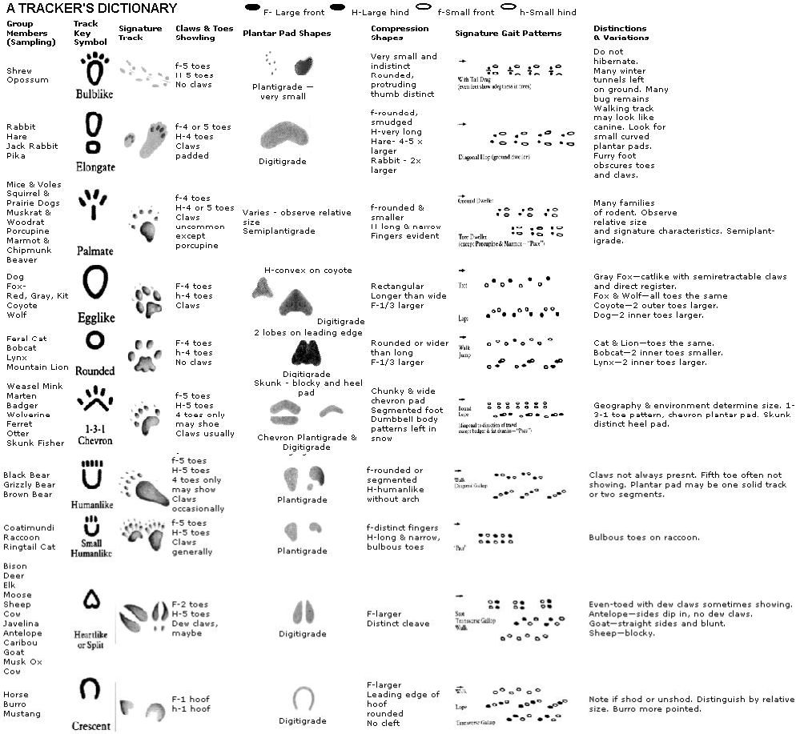
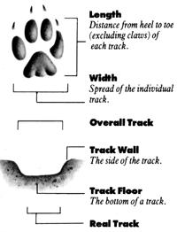
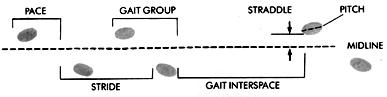
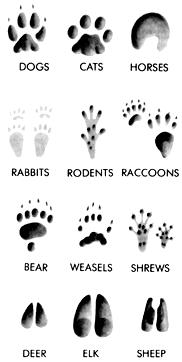

A new approach to the art of tracking mammals.
Blest with a Magic Power is he,
Drinks deep where others sipped;
And Wild Things write their lives for him
In endless manuscript.
-Ernest Thompson Seton
("The Trailer")
YOU WAKE ON AN UNNATURALLY bright winter's morning and, squinting, peer out your bedroom window. As unexpected as enchantment, a half-foot of snow has fallen while you slept, and you're fairly pulled out of bed by the childish urge to be the first to mark the clean white sheet that's settled over your yard. Ignoring coffee for once, you dress quickly, fired by the adrenaline high of dramatic weather, and rush outside . . . only to find that smaller feet have written where you'd hoped to scratch your name. Put your petty disappointment aside; here's the chance to go to school on what master naturalist Ernest Thompson Seton called "the oldest of writing",tracks.
Just as almost anyone can, in time, learn to read the written word, so can anybody master the vocabulary, sentence structure and skill of tracking if he or she is willing to put in enough time and effort.
The place to start is just beyond your doorstep. Take the time to observe the animals that you later hope to track, starting with those that you can count on having around. Your dog, cat or resident squirrel will, as you, watch it, provide invaluable information as to how it moves, and why. More important, when you can watch a track being made before looking at the results, you immediately move from the role of novice observer of prints to that of educated interpreter; you can actually watch behavior and action transferred to symbol.
Once you've "gotten to know" a representative from one animal family group (a dog provides the usual introduction to the canine family), move to another (the neighborhood's strutting tomcat is a likely candidate). In each case, learn the animal's habits, home range and behavior patterns (and how these relate to breeding, bedding and feeding). Keep in mind, though, that you're dealing with individuals, and any rules you come up with will eventually be broken.
As you advance and spend more time observing wild animals, you'll begin to lose any of the Bambi/Mickey Mouse stereotypes you might have harbored and to replace them with a knowledge of the motivation behind animal behavior. In short, most mammal activity revolves around eating, avoiding being eaten, sleeping and breeding. serve animals for long enough and you'll be amazed by how simplistic, repetitive and predictable their behavior begins to appear.
Pay attention to detail. What does the animal eat? If it's a herbivore, does it prefer specific plants from one season to the next? If it's carnivorous; does it concentrate upon a specific prey species? If it's omnivorous, does it still show some discrimination in choosing its diet? Examine scat, when possible. Knowing what comes out will give you a pretty good idea of what went in.
Wherever the wild forefoot goes, it leaves behinda detailed record of its visit. -Seton
|
 |
 |
 |
|
 |
|
|